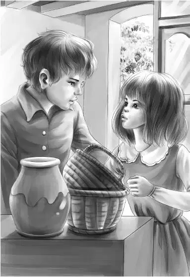

Chapter 5 More Plans
奥登一家都上了车，维莉才问道：“爷爷，我们知道，打算买那块地的是您，没错吧？”
“没错，”爷爷笑眯眯地看着她，“这是帮助珞凡的最好方式：首先，她从此可以无忧无虑地生活；其次，我也拥有了一片很好的林地。卡特，这事就拜托你了，好吗？”
卡特先生笑了起来：“我连第一步怎么做都想好了。”
“事情还没个结果，我可不想就这么回家。”亨利说，“爷爷，要不咱们找个汽车旅馆，再住上几天？”
“好吧！”奥登先生赞同道，“这个主意不错。咱们可以问问护林员，最近的汽车旅馆在哪儿。”
“只要三个房间就够了。”班尼说，“一个给姐姐们住，另外一个给我和哥哥，剩下那个给爷爷。”
“那就这样定了。”爷爷转过头，对卡特说道，“你还是早些回去吧，还有生意要打理呢。”
于是大家挥手告别，卡特先生的车开走了。
一家人回到杂货店，遇到了之前见过的护林员。
“去过珞凡家了？她在家吗？”护林员问道。
“在家。”杰西答道，“老奶奶人很好呢！”
“说起来你们可能不信，”护林员说，“她都快90岁了，每次还要来回走上十英里去沼地割甜草。对一个90岁的人来说，可不容易啊！而且只要是她编的篮子，准会供不应求。”
“我都想要个那样的篮子用来装针线呢！”杰西说，“维莉也是。”
“只要你们开口，迪森女士准会编几个送给你们的。”护林员说，“不过千万不要提钱，因为那是她送给你们的礼物，相信我好了——她曾送了一个给我太太，我本想给她点钱，结果让她很伤心。”
这时，爷爷插话说：“不知道你有没有听说，波西·奥斯古博士和他的团队最近恰好在附近工作？班尼无意中发现了一个山洞，估计他会感兴趣。”
“是的，我在直升机上也看到了。”另外一名护林员说，“大石头掉下去后，就露出了山洞。这不，在门口就能看到那堆石头呢。”
果然，滚落下来的大大小小的石头堆积在一起，大约有十英尺那么高。

“幸好没造成大规模的岩崩。”护林员说，“我知道奥斯古博士就在附近。我先打电话问问，再把他的电话号码告诉您。”
“好极了！”奥登先生说，“对了，我们还要找家汽车旅馆，请问最近的一家在哪儿？”
“掉头上大路，右转后走半英里就到了。那是最近的一家，也是条件最好的。”
“咱们运气真好！”班尼欢呼道，“这一切好像都是给咱们准备的！”
一家人走出杂货店，上了旅行车。亨利发动了车子，大家朝护林员挥手道别。
“我们会很快就回来的！”班尼叫道。
“至少也要明天了！”爷爷眨了眨眼，大声说。
“估计孩子们都累了！”护林员喊道。
“不说还真没感觉。”杰西感慨道，“这下倒真的觉得累了。”
“我也是。”爷爷说，“先打个盹再说。”
亨利沿着护林员提供的路线，很快找到了那家汽车旅馆——这是一排长长的木房子，一头是办公室，另一头是餐厅。
“太好了。”杰西说，“总算能吃上一顿像模像样的晚餐了。感觉咱们这两天就一直没有停下来过。”
“我连吃什么都想好了。”班尼说。
爷爷说道：“那就别说出来，先保密，留点小悬念吧！”
三间卧室的布局都很相似，每间卧室里都有两张床，一个厕所。
班尼叫道：“噢，我要赶紧去洗手啦！我有两天没认真洗过手了！”
“小班班，太阳打西边出来了吧？”亨利打趣道，“那么，我的当务之急就是——洗澡。”
奥登一家很快就在各自的房间舒适地安顿了下来。
“我先去洗个澡。”亨利说道。
“你洗完后我再洗，”班尼说，“然后看看床舒不舒服。”
与此同时，维莉和杰西也决定洗完澡后打个小盹儿。而爷爷则是最早进入梦乡的，毕竟大家已经有两个晚上没睡过整觉了。
差不多过了一个小时，亨利醒了过来。班尼见他醒了，连忙问道：“猜我晚上吃什么？”
“我就知道你藏不住话，是吧，小班班？”亨利说，“别着急，餐厅还没开始营业呢！”
“我怎么没想到这一点？”班尼说，“拜托他们快开门吧！我现在满脑子都是吃的。”
一直等到五点半，大家实在忍不住了，便下楼来到餐厅，选了张五人餐桌坐下。
“可惜卡特先生没有这个口福。”维莉说道，“我要吃烤牛肉，还有青豆、土豆泥！”
“还真是一份不错的盛夏食谱！”奥登先生说，“我也来上一份。”
杰西和亨利一时间还没想到更好的主意，班尼已经叫了起来：“我要吃腌牛肉、卷心菜、好多好多辣椒酱，还有芜菁胡萝卜！”
这顿晚餐可谓丰盛又美味！餐厅的服务生目不转睛地看着——只见班尼迫不及待地切着粉嫩的腌牛肉，看起来像是饿了好多天似的。
杰西只吃了几口，就停住问道：“爷爷，卡特先生要做的‘第一步’是什么？”
“首先要争取把林地买下来。”爷爷说，“接着就是去找波西·奥斯古，你们肯定听说过——他是个了不起的人，也是个探险家，写了好多本关于岩洞和山脉的书。要是哪里出现了新的裂隙、发生了岩崩，他准会感兴趣的。我们认识了好几年，班尼发现的岩洞值不值得研究，他只要看一眼就能知道。”
“肯定值得！我敢打赌！”班尼叫道。
“我可不想跟你赌，”爷爷微笑着说，“因为我也是这样想的，否则，我就不会让护林员去找他了，那样只会浪费他的时间。”
“在事情水落石出之前，咱们就待在旅馆里吧。”班尼请求道，“好吗，爷爷？”
“好，我的孩子。”奥登先生微笑着说，“反正现在我又没法分身，做不了其他事情。”
亨利沉吟道：“现在最大的疑问就是，那到底是个山洞还是个坑洞？”
杰西附和道：“换个说法就是，那洞里究竟有没有神秘的东西？”
班尼喝了口牛奶：“餐后甜点我想吃面包布丁。”
“但愿你能撑得下。”爷爷笑着看他。
“当然可以！”班尼说，“我的肚子是个无底洞呢！”
“爷爷，”亨利突然问道，“您是不是早就预料到平古峰上会出事？”
“不是的。”爷爷答道，“我只是觉得不放心，因为上山下山只有一条路。”
当晚12点，一个男人走进了旅馆办公室，住进了班尼和亨利隔壁的那间屋子。凌晨一点，另外一个男人住进了餐厅旁边的一间屋子——那是整栋旅馆的最后一间客房。奥登一家人谁都没有醒来，直到第二天早餐前，他们还对这两个人的到来一无所知。